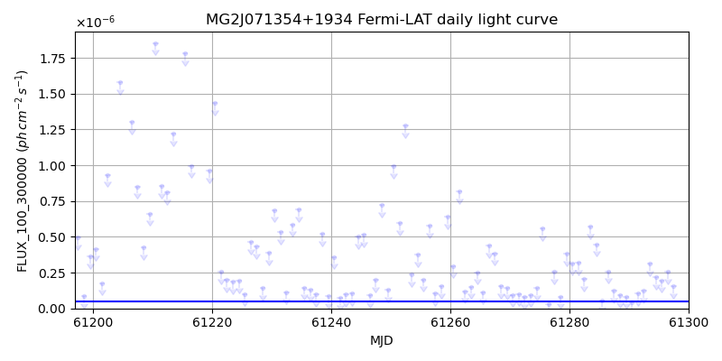
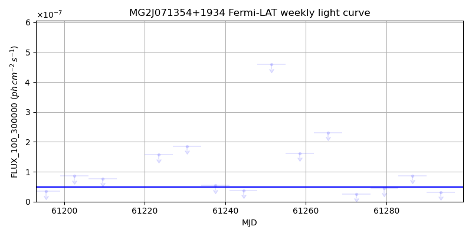
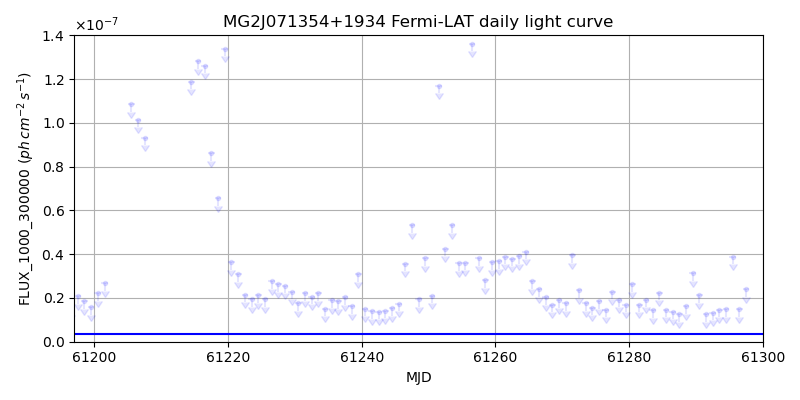
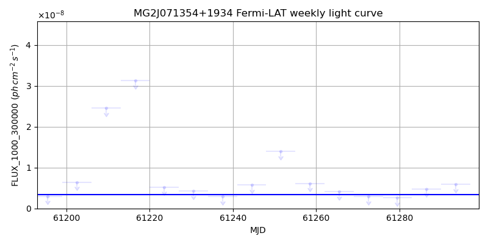

LAT Lightcurve site: https://fermi.gsfc.nasa.gov/ssc/data/access/lat/msl_lc/source/MG2_J071354p1934
NED: Query
Time of last update of this page: UT: 2026-09-15 15:18 (MJD: 61298.638)
| Property | Value |
|---|---|
| R.A. | 7:13:55.68 |
| Dec. | 19:34:58.8 |
| z | 0.540 |
| 3FGL SpectrumType | LogParabola |
| 3FGL PL Index | |
| 3FGL Flux_100_300000 | 4.96e-08 1 / (s cm2) |
| 3FGL Flux_1000_300000 | 3.41e-09 1 / (s cm2) |
| 3FGL Flux >200 GeV | 8.62e-13 1 / (s cm2) |
| 3FGL Extrap. Crab >200 GeV | 0.00 |
| 3FGL Flux After EBL Absorption >200GeV | 1.34e-13 1 / (s cm2) |
| 3FGL EBL Crab Fraction >200GeV | 0.00 |

| MJD | dMJD | Flux | dFlux | Frac3FGL | FracCrab>200GeV | EBLFracCrab>200GeV |
|---|---|---|---|---|---|---|
| 61293.50 | 0.50 | 3.13e-07 | 0.00e+00 | 0.00 | 0.00 | 0.00 |
| 61294.50 | 0.50 | 2.18e-07 | 0.00e+00 | 0.00 | 0.00 | 0.00 |
| 61295.50 | 0.50 | 1.96e-07 | 0.00e+00 | 0.00 | 0.00 | 0.00 |
| 61296.50 | 0.50 | 2.55e-07 | 0.00e+00 | 0.00 | 0.00 | 0.00 |
| 61297.50 | 0.50 | 1.56e-07 | 0.00e+00 | 0.00 | 0.00 | 0.00 |

| MJD | dMJD | Flux | dFlux | Frac3FGL | FracCrab>200GeV | EBLFracCrab>200GeV |
|---|---|---|---|---|---|---|
| 61265.50 | 3.50 | 2.31e-07 | 0.00e+00 | 0.00 | 0.00 | 0.00 |
| 61272.50 | 3.50 | 2.60e-08 | 0.00e+00 | 0.00 | 0.00 | 0.00 |
| 61279.50 | 3.50 | 4.41e-08 | 0.00e+00 | 0.00 | 0.00 | 0.00 |
| 61286.50 | 3.50 | 8.67e-08 | 0.00e+00 | 0.00 | 0.00 | 0.00 |
| 61293.50 | 3.50 | 3.16e-08 | 0.00e+00 | 0.00 | 0.00 | 0.00 |

| MJD | dMJD | Flux | dFlux | Frac3FGL | FracCrab>200GeV | EBLFracCrab>200GeV |
|---|---|---|---|---|---|---|
| 61293.50 | 0.50 | 1.47e-08 | 0.00e+00 | 0.00 | 0.00 | 0.00 |
| 61294.50 | 0.50 | 1.50e-08 | 0.00e+00 | 0.00 | 0.00 | 0.00 |
| 61295.50 | 0.50 | 3.89e-08 | 0.00e+00 | 0.00 | 0.00 | 0.00 |
| 61296.50 | 0.50 | 1.50e-08 | 0.00e+00 | 0.00 | 0.00 | 0.00 |
| 61297.50 | 0.50 | 2.42e-08 | 0.00e+00 | 0.00 | 0.00 | 0.00 |

| MJD | dMJD | Flux | dFlux | Frac3FGL | FracCrab>200GeV | EBLFracCrab>200GeV |
|---|---|---|---|---|---|---|
| 61265.50 | 3.50 | 4.08e-09 | 0.00e+00 | 0.00 | 0.00 | 0.00 |
| 61272.50 | 3.50 | 2.88e-09 | 0.00e+00 | 0.00 | 0.00 | 0.00 |
| 61279.50 | 3.50 | 2.62e-09 | 0.00e+00 | 0.00 | 0.00 | 0.00 |
| 61286.50 | 3.50 | 4.80e-09 | 0.00e+00 | 0.00 | 0.00 | 0.00 |
| 61293.50 | 3.50 | 5.88e-09 | 0.00e+00 | 0.00 | 0.00 | 0.00 |
--------------------------------------------------------- Using user-supplied coords: 7:13:55.68 19:34:58.8 2000 --------------------------------------------------------- FLWO UT night of: 2026-09-16 Local Sid. @ Midnight: 23:17 Sunset (-15.0) (local, UT): 19:37 02:37 Sunrise (-15.0) (local, UT): 05:01 12:01 Moonrise (local, UT): Moonset (local, UT): 20:59 03:59 Moon phase: 0.27 --------------------------------------------------------- AzTime LSID UT Obj_el Obj_az Mn_el Mn_az Sep. --------------------------------------------------------- 19:37 18:53 02:37 -38.5 353.3 13.4 230.2 124.0 20:07 19:23 03:07 -38.8 2.3 8.5 234.7 124.2 20:37 19:53 03:37 -38.0 11.3 3.4 238.9 124.4 21:07 20:23 04:07 -36.3 19.9 -1.3 242.7 124.6 21:37 20:53 04:37 -33.7 28.0 -7.8 246.3 124.9 22:07 21:23 05:07 -30.3 35.3 -13.6 249.6 125.1 22:37 21:53 05:37 -26.3 42.0 -19.4 252.8 125.4 23:07 22:23 06:07 -21.8 48.0 -25.4 255.9 125.6 23:37 22:53 06:37 -16.8 53.3 -31.4 259.0 125.9 00:07 23:23 07:07 -11.5 58.2 -37.4 262.0 126.2 00:37 23:53 07:37 -5.8 62.6 -43.5 265.2 126.5 01:07 00:24 08:07 0.3 66.7 -49.6 268.6 126.8 01:37 00:54 08:37 5.9 70.6 -55.7 272.3 127.1 02:07 01:24 09:07 12.0 74.2 -61.8 276.8 127.5 02:37 01:54 09:37 18.1 77.8 -67.8 282.7 127.8 03:07 02:24 10:07 24.4 81.3 -73.7 291.5 128.1 03:37 02:54 10:37 30.8 84.8 -79.0 307.4 128.5 04:07 03:24 11:07 37.2 88.5 -82.7 342.4 128.8 04:37 03:54 11:37 43.5 92.5 -81.9 32.3 129.2 05:01 04:19 12:01 48.8 96.2 -78.4 56.3 129.4 --------------------------------------------------------- Dark hours >55 deg.: 0.00